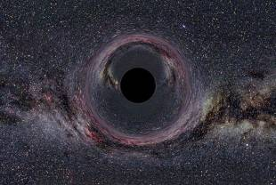
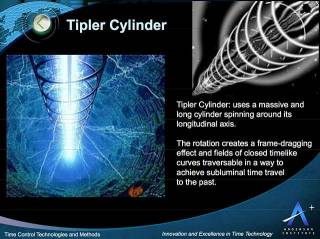
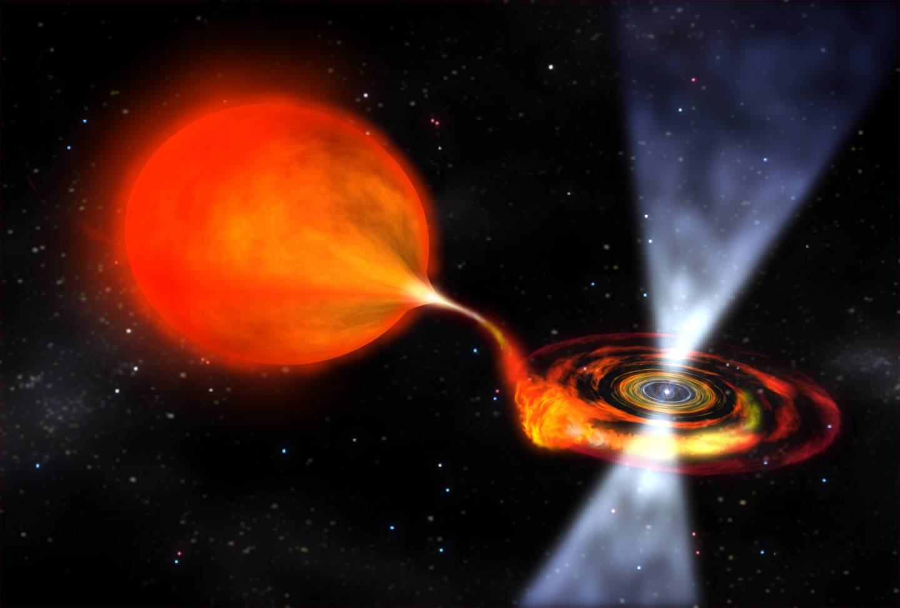
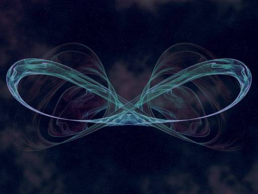

Наука
1. Червоточины
Астрофизик Эрик Дэвис из Международного института перспективных исследований EarthTech в Остине считает, что это возможно. Все, что вам нужно — это кротовая нора или червоточина, теоретический проход сквозь ткань пространства-времени, предсказанный в рамках теории относительности. Червоточины пока не были доказаны, и если их когда-нибудь и найдут, они будут настолько малы, что в них не поместится даже человек, не говоря о космическом корабле. При всем этом Дэвис полагает, что червоточины вполне можно использовать для перемещения обратно в прошлое. Как общая теория относительности, так и квантовая теория предлагают несколько возможностей для путешествия — например, «закрытую времяподобную кривую» или путь, который сокращает пространство-время, то есть машину времени. Дэвис утверждает, что современное научное понимание законов физики «кишит машинами времени, то есть многочисленными решениями геометрии пространства-времени, которые позволяют путешествовать во времени или обладают свойствами машины времени». Все потому, что корабль прибудет в пункт назначения раньше, чем луч света, пройдя по короткому пути сквозь пространство-время. Транспорт, таким образом, не нарушит правило универсального ограничения скорости, которое накладывает свет, поскольку сам корабль не путешествует с такой скоростью. Такая червоточина может теоретически вести не сквозь пространство, но и сквозь время. Понадобятся титанические усилия.
2. Машина времени: цилиндр Типлера
Чтобы использовать машину времени на основе цилиндра Типлера, вам нужно покинуть Землю на космическом корабле и отправиться в космос к цилиндру, который там вращается. Когда вы достаточно приблизитесь к поверхности цилиндра (пространство вокруг него будет по большей части «варпнуто», деформировано), вам нужно будет несколько раз обогнуть его и вернуться на Землю. Вы прибудете в прошлое. Насколько далеко в прошлое — зависит от того, сколько раз вы обогнете цилиндр по орбите. Даже если вам покажется, что ваше собственное время движется вперед как обычно, пока вы огибаете цилиндр, за пределами искаженного пространства вы неизбежно будете двигаться в прошлое. Это все равно, что вы поднимаетесь по винтовой лестнице и обнаруживаете, что с каждым полным кругом находитесь на одну ступеньку ниже.
3. Пончиковый вакуум
По мнению Амоса Ори из Израильского технологического института в Хайфе, пространство может быть достаточно скручено для создания локального гравитационного поля, которое напоминает пончик определенных размеров. Гравитационное поле образует круги вокруг этого пончика, поэтому пространство и время крепко закручены. Важно отметить, что такое положение дел сводит на нет необходимость какой-либо гипотетической экзотической материи. Хотя как это будет выглядеть в реальном мире описать довольно трудно. Ори говорит, что математика показала, что через равные промежутки времени внутри пончика в вакууме будет образовываться машина времени. Все, что вам нужно — это попасть туда. В теории можно будет отправиться в любой момент времени с тех пор, как была построена машина времени.
4. Экзотическая материя
В физике экзотическая материя — это материя, которая так или иначе отличается от нормальной и обладает некоторыми «экзотическими» свойствами. Поскольку путешествие во времени считается нефизическим, физики полагают, что так называемые тахионы (гипотетические частицы, для которых скорость света — это состояние покоя) либо не существуют, либо неспособны взаимодействовать с нормальной материей. Но когда отрицательная энергия или масса — та самая экзотическая материя, или вещество — скручивает пространство-время, становятся возможными все невероятные явления: червоточины, которые могут выступать туннелями, соединяющими удаленные участки вселенной; варп-двигатель, который позволит путешествия быстрее скорости света; машины времени, которые позволят отправиться в прошлое.
5. Космические струны
Космические струны — это гипотетические 1-мерные (пространственно) топологические дефекты в ткани пространства-времени, оставшиеся еще со времен образования вселенной. С их помощью в теории могут быть образованы поля замкнутых времениподобных кривых, позволяющих путешествовать в прошлое. Некоторые ученые предлагают использовать «космические струны» для построения машины времени. Если подвести две космические струны достаточно близко одна к другой или одну струну к черной дыре, в теории это может создать целый массив «замкнутых времениподобных кривых». Если делать тщательно рассчитанную «восьмерку» на космическом корабле вокруг двух бесконечно длинных космических струн, в теории можно оказаться где угодно и когда угодно.
6. Сквозь черную дыру

Черная дыра оказывает невероятное влияние на время, замедляя его так, как ничто другое в галактике. По сути, это природная машина времени. Если бы миссией облета вокруг черной дыры управляло наземное агентство, для них облет орбиты занял бы 16 минут. Но для смелых людей на борту корабля, который находится близко к массивному объекту, время шло бы очень медленно. Куда медленнее, чем на Земле. Время для команды замедлилось бы вдвое. За каждые 16 минут они переживали бы только 8.
 Вверх
Вверх